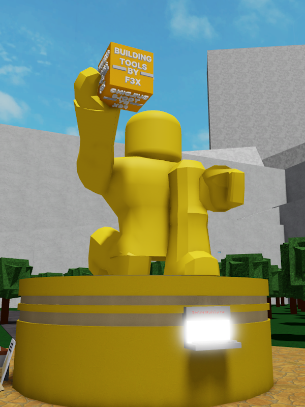

The Statue

The Statue is a golden statue located on TPCL's spawn. It's the official symbol of Test Place. It's raising the Building Tools by F3X into
the air.
Trivia
• This statue has changed a lot since Test Place's release. Around 3-5 times.
• This statue also exists in T.P.R.
• The statue is meant to show how much power and potential you get with F3X.
• Originally this statue was LuaTastic's avatar.
• The statue has a name floating above it in-game, implying that it's an npc and that it's sentient in some way.
• The statue can also be damaged, but killing it does nothing.
• The statue is placed on some sort of stand, with a malfunctioning mainframe computer on the front. If you try to operate the computer, it will damage you.
• The statue is located on the origin of the world. All GPS devices will display coordinates relative to the statue.
• The statue was damaged during the Outbreak times of Test Place.
• This statue also exists in T.P.R.
• The statue is meant to show how much power and potential you get with F3X.
• Originally this statue was LuaTastic's avatar.
• The statue has a name floating above it in-game, implying that it's an npc and that it's sentient in some way.
• The statue can also be damaged, but killing it does nothing.
• The statue is placed on some sort of stand, with a malfunctioning mainframe computer on the front. If you try to operate the computer, it will damage you.
• The statue is located on the origin of the world. All GPS devices will display coordinates relative to the statue.
• The statue was damaged during the Outbreak times of Test Place.